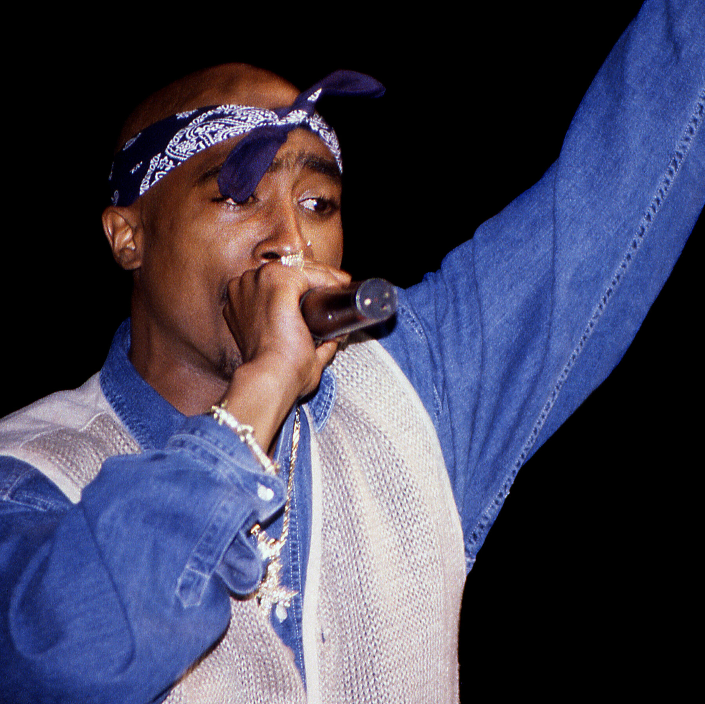

Tupac Shakur Murder Trial Begins: Keefe D Case Brings Nearly 30 Years of Questions Back to Court
Music News
Published: Monday, August 17, 2026

Nearly three decades after Tupac Shakur was killed in Las Vegas, the rapper’s death is once again at the center of a courtroom battle.
The long-awaited murder trial of Duane “Keefe D” Davis is moving forward after a jury of six men and 10 women was selected to hear the case.
Davis, 63, has pleaded not guilty to a murder charge stemming from the September 1996 shooting. Prosecutors allege that he helped organize the attack that killed Tupac, although they do not accuse him of being the person who pulled the trigger.
Opening statements are expected to begin Monday, Aug. 17, with the trial potentially lasting several weeks.
What Happened That Night?
Tupac was riding in a BMW with Death Row Records co-founder Marion “Suge” Knight after attending a Mike Tyson fight at the MGM Grand in Las Vegas.
Earlier that evening, Davis’ nephew, Orlando “Baby Lane” Anderson, had been involved in a confrontation with Tupac and members of his entourage inside the hotel.
Later that night, a vehicle carrying Davis and several others encountered the BMW carrying Tupac and Knight. Gunfire followed.
Tupac was struck multiple times. Knight was also wounded but survived. Tupac died six days later, on Sept. 13, 1996. He was only 25.
Keefe D’s Story Could Become Critical Evidence
One of the most closely watched elements of the prosecution’s case is Davis’ own past statements.
In his 2019 memoir, Compton Street Legend, Davis described his alleged involvement in the events surrounding Tupac’s killing. His account included details about being inside the vehicle that approached Tupac and Knight.
Davis has since challenged portions of that account. He has claimed that he did not personally write the book and has disputed allegations about his role in the shooting.
Prosecutors are expected to argue that Davis’ previous statements provide important evidence connecting him to the events.
Ultimately, jurors will have to decide whether the prosecution has proven Davis’ criminal responsibility beyond a reasonable doubt.
Suge Knight Could Be a Major Name in the Case
Knight remains one of the most important surviving witnesses connected to the night.
He was driving the BMW when Tupac was shot and survived the attack himself. Knight has reportedly expressed reluctance to participate in the trial, despite being identified as a potential witness.
His testimony could potentially provide jurors with another perspective on what happened that night, although it remains unclear how much he will ultimately participate.
Orlando Anderson and the Other Men in the Car
Anderson has long been one of the most discussed figures in the investigation.
He was identified as being in the vehicle with Davis and was previously accused of having a role in the shooting. Anderson denied involvement in Tupac’s murder before he was killed in an unrelated shooting in 1998.
Terrence “Bubble Up” Brown and Deandre “Big Dre” Smith were also identified as passengers in the vehicle. Both men have since died.
Because the other alleged participants are no longer alive, Davis is now the only person facing prosecution for Tupac’s death.
What About Biggie?
The name of Christopher Wallace, better known as The Notorious B.I.G., could also surface as the trial revisits the larger history surrounding Tupac’s murder.
Biggie was killed in Los Angeles approximately six months after Tupac. The similarities between the two high-profile drive-by shootings have fueled theories about whether the murders were connected.
However, the exact relationship between the two cases has remained disputed, and Biggie was never charged in connection with Tupac’s killing.
Nearly 30 Years Later, The Questions Go to Court
Tupac’s death has spent decades living in the world of hip-hop theories, documentaries, interviews and unanswered questions.
Now, prosecutors will attempt to turn years of investigation and disputed statements into a case strong enough to convince a jury.
For fans who have spent almost 30 years asking who was responsible for Tupac Shakur’s death, the case has finally reached a point where the allegations will be tested in court.
The biggest question is no longer simply who was there that night—it is whether prosecutors can prove that Duane “Keefe D” Davis was legally responsible for Tupac’s murder.